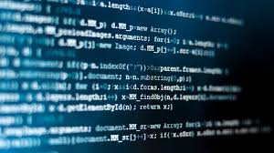

Développer des compétences de base dans le domaine de l'informatique Donner le goût des sciences du numérique lors d'activités variées : travaux pratiques, projets, exposés et débats. Développer la rigueur en apprenant les bases de la programmation, clé de la maîtrise des ordinateurs. S'interroger sur la qualité, la sûreté, la fiabilité et la sécurité des données numériques. Identifier et s'interroger sur les progrès, les avantages et les risques que génère la société numérique.

Cet enseignement propose une introduction à la science informatique : information numérique, algorithmes, langages, architectures. Il s'agit d'un enseignement de 2 heures par semaine.
Les notions scientifiques enseignées permettront de comprendre les usages (internet, réseaux sociaux...), les créations (objets numériques, représentations 3D), les applications (logiciels) et les enjeux de l'informatique (sécurité, confidentialité, protection de la personne).
Dans le cadre de projets menés en équipe, de nombreux domaines d'application peuvent être abordés en lien avec la découverte des métiers et des entreprises du secteur du numérique : graphisme et images, sécurité, prise de décision, communication, robotique, etc. Des connaissances et des compétences en science de la vie et de la terre (code génétique, géosciences) peuvent également contribuer à l'élaboration de ces projets.
En se développant largement, la société numérique suscite de nouvelles questions éthiques et juridiques ; les projets conduits auront aussi pour objectif de mettre en lumière ces problématiques.
Au baccalauréat, l'enseignement de spécialité ISN sera évalué (avec un coefficient 2) au cours d'une épreuve orale fondée sur le projet mené, par un jury constitué de deux professeurs.
Il est primordial qu'au sein de la société numérique en voie de formation aujourd'hui les filles et les garçons trouvent la même place. Les contenus de l'enseignement de spécialité « ISN » sont suffisamment riches pour permettre à tout élève d'en tirer un profit quelle que soit son orientation future ; il prépare notamment à l'enseignement supérieur par le développement de plusieurs compétences telles que :
Pour les élèves qui souhaitent poursuivre dans l'enseignement supérieur tout en restant dans le domaine de l'informatique et des sciences du numérique, un large choix est proposé dans chaque académie :
IUT d'informatique et de sciences et technologies de l'information et de la décision,
Licences d'informatique, mathématiques et informatique,
Classes Préparatoires aux Grandes Écoles,
Écoles d'ingénieurs sur concours ou après préparation intégrée